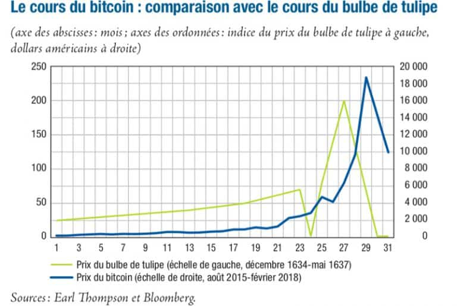

Les enjeux monétaires
Le Bitcoin est-il une monnaie ?
D'abord définissons ce qu'est une monnaie. Celle-ci à trois objectifs :
- -Être une unité de compte.
- -Être un instrument de paiement.
- -Être un moyen de stocker ses richesses.
Or le Bitcoin est une cryptomonnaie et ses propriétés ont plusieurs avantages spéculatifs, encourageant les gens à rester proche du marché. Ceci provoquant de forte variations du prix du Bitcoin. Ainsi, cette cryptomonnaie est considérée comme instable, trop variable, c'est pourquoi à ses débuts, les économistes doutaient de sa capacité à jouer le rôle de monnaie.
Quelle sont les différences entre le Bitcoin et les devises ?
D'abord définissons ce qu'est une monnaie fiat C'est une monnaie dont le prix est attribué par le gouvernement lorsqu'il la déclare comme ayant un cours légal.

La principale différence entre le Bitcoin et les devises c'est que le Bitcoin est décentralisé. Leurs objectifs sont pourtant communs, assurer des paiements sans friction entre deux parties et également servir à stocker les richesses. Or ils restent très différents. Par exemple, le Bitcoin permet de ne payer presque aucuns frais auxiliaires tels que les frais et délais de transactions, les coûts d'utilisation et autres... De plus, les cryptomonnaies possèdent encore des caractéristiques que les monnaies traditionnelles ne peuvent pas encore pourvoir. En effet, les cryptomonnaies peuvent être échangées et dépensées par tout le monde et à tout moment à travers tout le monde sans passer par l'intermédiaire d'une banque ou d'un gouvernement. De plus, la valeur d'une monnaie provient essentiellement des dettes que la banque accorde car celle-ci créé de l'argent pour vous en passer. tandis que la valeur du Bitcoin dépends de sa capacité à être une bonne monnaie d'échange. Néanmoins, le Bitcoin reste une monnaie peu fiable et très variable tandis que les monnaies traditionnelles sont plus stable et plus confiante notamment grâce au système bancaire européen et mondial.
Les enjeux environnementaux
Le minage nécessite l'utilisation de machines puissantes afin d'effectuer et valider les transactions de données. Ces machines consomment énormément d'électricité. De plus, le minage nécessite la mobilisation de plusieurs machines différentes ce qui multiplie la consommation. Plus il y a de Bitcoin, plus les machines travailleront. La production d’un seul token Bitcoin utiliserait la même quantité d’énergie que 778,988 transactions bancaires, et auraient la même empreinte carbone que 1,218,903 transactions bancaires. Plus le prix du Bitcoin augmente, plus il pollue. Pour donner un ordre d'idée, il a consommé 143 TWh en 2021. Le minage est aussi responsable d'une grande part des gaz à effets de serre. En effet, l'électricité produite pour alimenter les Bitcoins provient en majeure partie de la combustion du charbon. Cela constituerait 40% des gaz à effets de serre. Enfin, le minage utilise et épuise beaucoup de matières premières. Par exemple, il y a une pénurie de silicium depuis environ 3 ans. Cette pénurie s'explique par l'achat en masse de cartes graphiques qui permettent de miner.
Les enjeux spéculatifs
Les cryptoactifs tel que le Bitcoin sont hautement spéculatifs et leurs cours peuvent à tout moment s'effondrer. En effet, comme le Bitcoin est décentralisé, aucun cours n'est garanti. C'est à dire que les investisseurs ne peuvent récupérer leurs fonds que si d'autres utilisateurs désirent acquérir les mêmes cryptoactifs. Le cours d'un cryptoactif peut donc à tout moment s'effondrer si les investisseurs ne trouvent pas d'acquéreurs ou s'il se retrouvent en possession d'actifs illiquides. De plus, le processus d'émission d'unités est plafonné dans le temps. Cette limitation nourrit un phénomène de pénurie qui entraîne de très fortes fluctuations de cours. On peut d'ailleurs comparer son profil d'évolution de prix entre 2015 et 2018 avec celui du prix du bulbe de tulipe entre 1634 et 1637.
